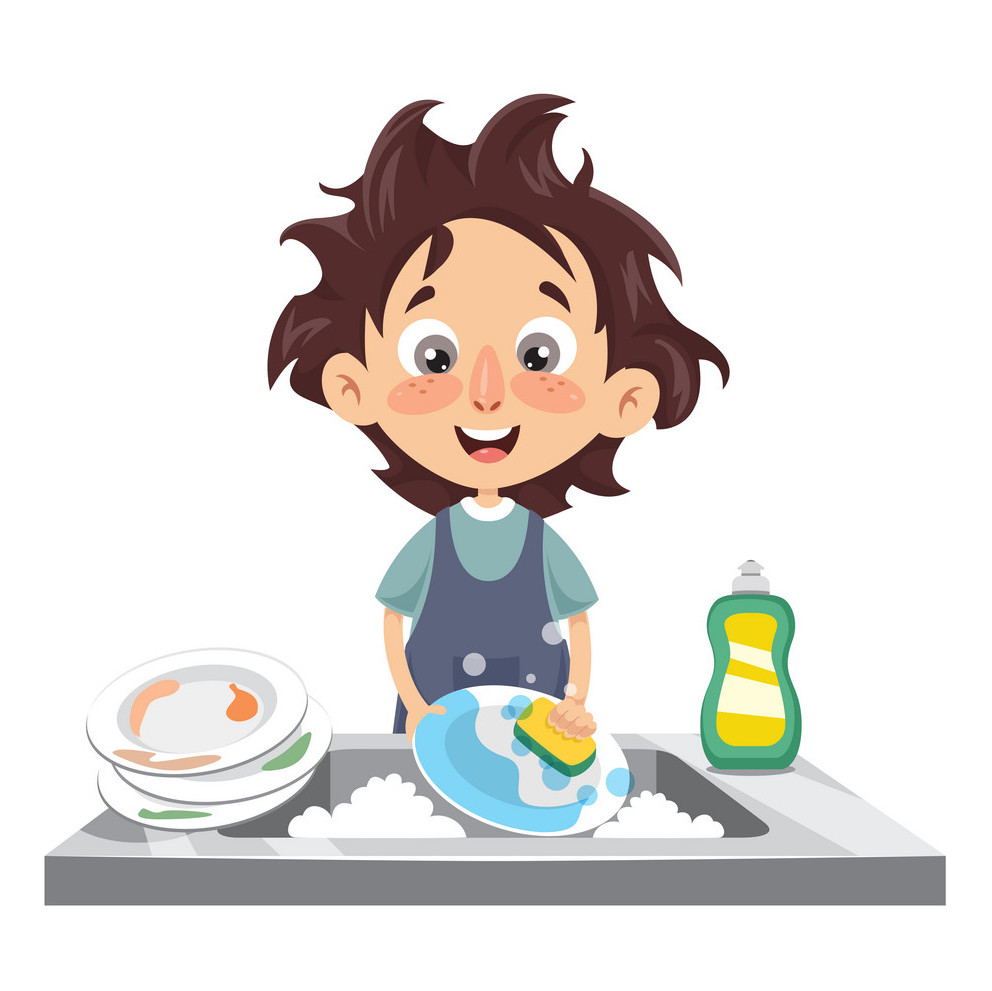
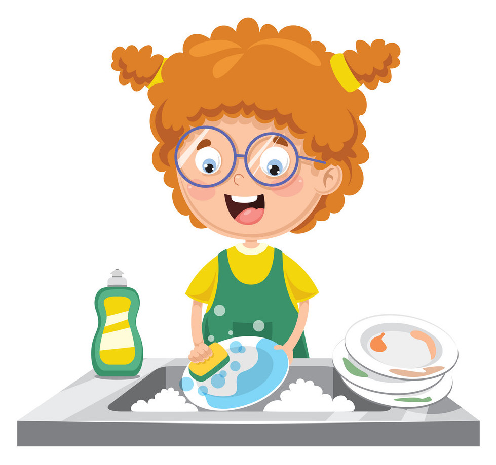
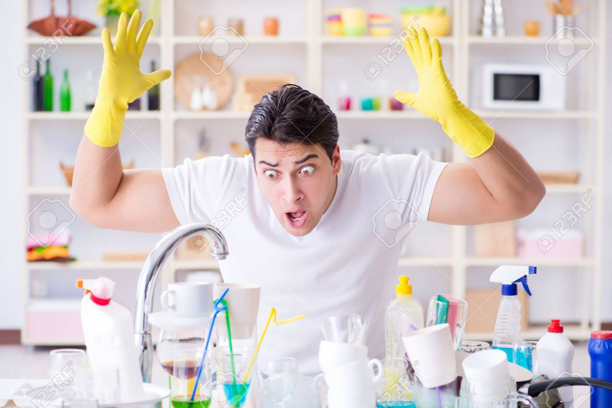
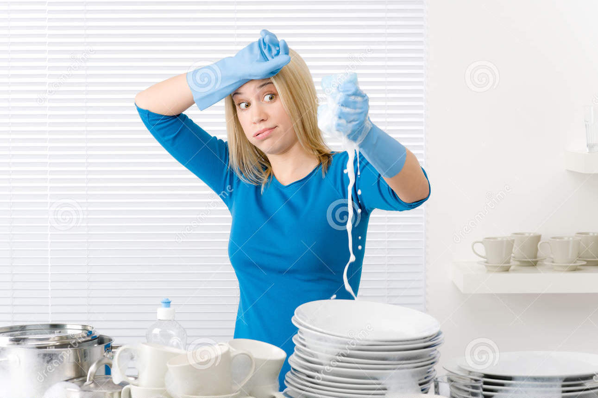
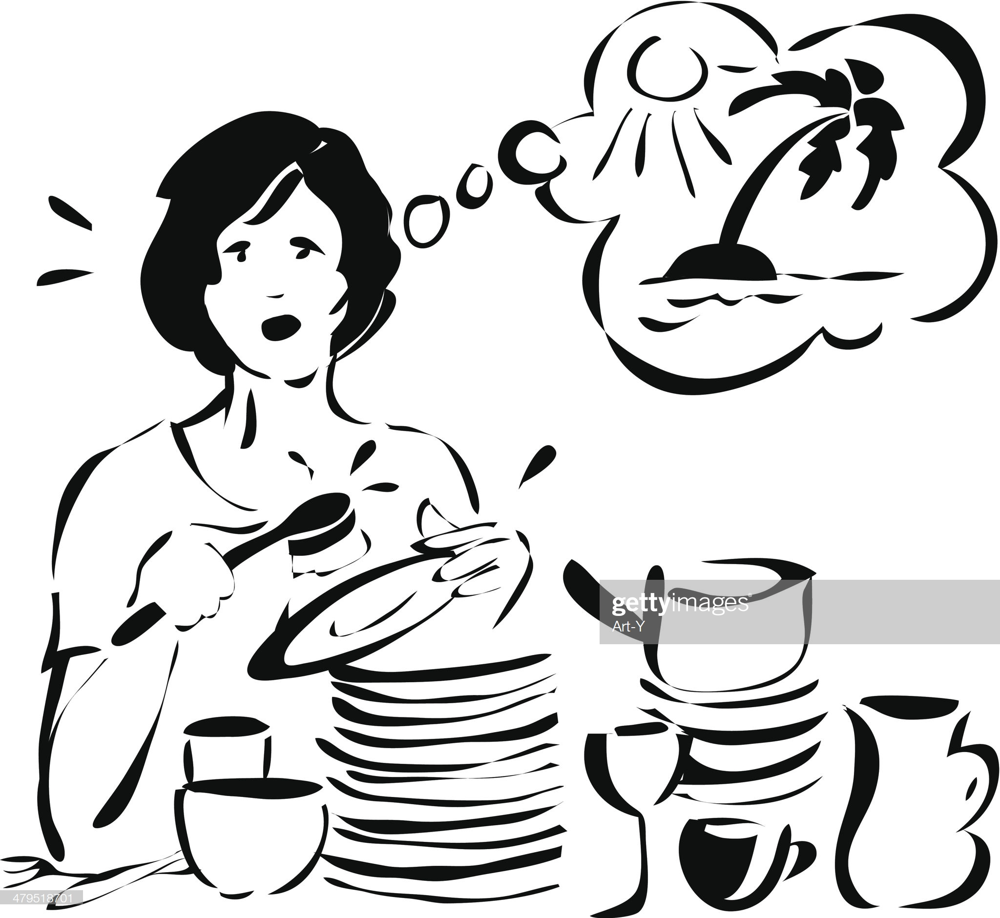
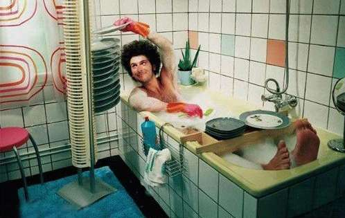
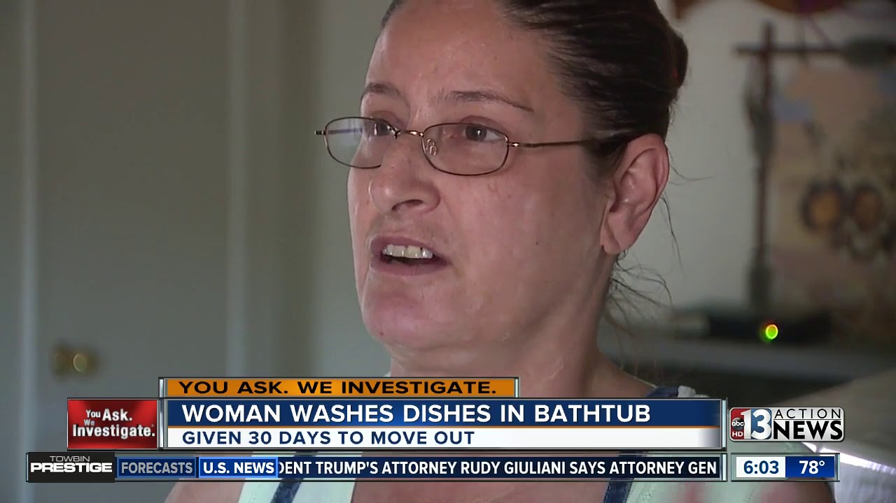

Dishes
New and Innovative Ways to do the Dishes


Everyone hates doing the dishes


Man oh man, frustrating isn't it? You know after a long day working some lame, meaningless, soul-crushing job.
You come home and with the little energy you have left you cook dinner, and then you have to do the same dreaded task
- wash the dishes. Sometimes you have a willing partner who will help you do the dishes. The not so lucky have to do them all by themselves.
Dang it! That sucks! Man oh man, first world problems, they are the worst. You may let them pile up and get all stinky with
the old food dried to the plates. Then they're even more difficult to wash.
But there is a solution. I've discovered a new, fun, and innovative way to wash the dishes. This will revolutionize
how you wash dishes. This will change your life forever. Just keep reading, don't stop now. You've made it this far,
just keep going, I mean scrolling down to find the answer to life I mean the answer to washing dishes.
Why not think of a new and fun way

People have been washing dishes the same way for too long. You have some dirty dishes, you get some water, and then some soap,
and then scrub them, rinse them and then you dry them. In the twentieth century, the dish washer was invented. With this new contraption,
you simply put them in there, add soap, and turn it on. People thought that was easy. But guess what, after a decade or two, people became
complacent and even more lazy. No one wants to open that heavy dishwasher door, and neatly stack the dirty dishes in a box. What a hassle!
Am I right? I mean wouldn't be easier if after doing the dishes you were wisked away to a beach in the caribbean with the sunshining while
drinking a delicious cocktail. I think most people would agree. Screw doing the dishes or even putting them in the dishwasher. Let's go to the beach.
The secrets to my success
Welcome back to the real world. Too bad you can't be whisked away to a luxurious beach, far far away from those
pesky dishes. You have to eat, and those dishes ain't gonna wash themselves. They'll just sit there,
stacked up in the sink forever.
I've discovered a new way to wash the dishes using current technology and a little innovation. Follow these easy steps:
- Grab all those dirty dishes and stack them up in the bathtub.
- Grab your favorite dish soap, and pour it over the dishes. I prefer grease fighting Dawn.
- Fill the bathtub with warm water. Imagine the water to be the same temperature of the waters of Cancun way down in Mexico.
- Grab some candles, put them along the bathtub, and light them. If you have a dimmer on the lights, dim the lights to low.
- Now, take off all your clothes. Or get in your bathing suit. You can also just get into the water with your clothes on. Really, there's no wrong way to do this.
- Get in the bathtub with the dirty dishes. You will feel sexy, confident, and in a strange way excited to wash those dishes. Just follow your heart.
- Take your time, wash each dish carefully. Put them aside to dry.
After you're done, sit back and relax. It'll be just like you're in paradise. You will feel relieved, relaxed, and content
that you finished the dishes. If possible, make a delicious cocktail, my favorite is a mojito. This revolutionary way of
washing dishes is called DishTubbing. It had been heralded as the biggest innovation and discovery
since Einstein's E=MC².

Beware: DishTubbing Discrimination

Be careful, revolutionary ideas have a way of creating discord among the masses even hate. People don't like change especially
things they can't understand. Some cities and even some states are in the process of passing laws banning DishTubbing.
But the truth shall set you free. Progress can't chained down. Embrace DishTubbing, it will change your life.